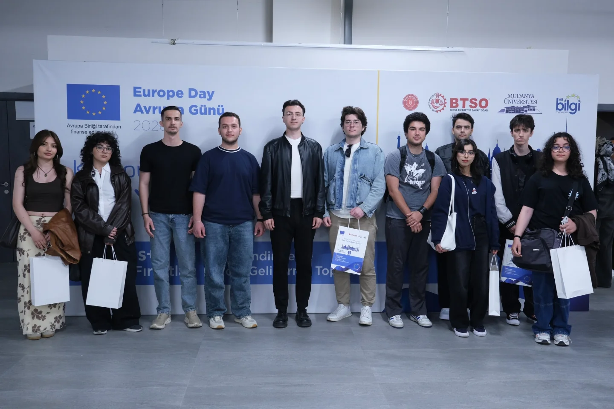

Bursa Teknik Üniversitesi Uluslararası Ticaret Topluluğu (BTÜ UTAT) olarak, Avrupa Günü 2026 etkinlikleri kapsamında Mudanya Üniversitesi ev sahipliğinde gerçekleştirilen “Erasmus+ ve ESC Fırsatları: Bilgilendirme ve Proje Geliştirme Toplantısı”na katılım sağladık.

Uluslararası Projeler ve Gençlik Fırsatları Masaya Yatırıldı
Avrupa Birliği tarafından finanse edilen, Bursa Ticaret ve Sanayi Odası (BTSO) ve AB Bilgi Merkezleri destekleriyle hayata geçirilen bu değerli organizasyonda; uluslararası projeler, AB hibeleri ve gençlere sunulan küresel fırsatlar hakkında kapsamlı ve kritik bilgiler edindik.
Küresel Vizyon ve Yeni Proje Fikirleri
Topluluğumuzun vizyonunu küresel ölçeğe taşımak ve yenilikçi proje fikirleri geliştirmek adına son derece verimli geçen toplantı, güçlü iş birliği ağlarının kurulduğu ve stratejik öğrenimlerin paylaşıldığı bir zemin sundu.
Etkinliğin gerçekleşmesinde emeği geçen tüm paydaşlara, destek veren kurumlara ve organizasyon ekibine teşekkür ederiz.